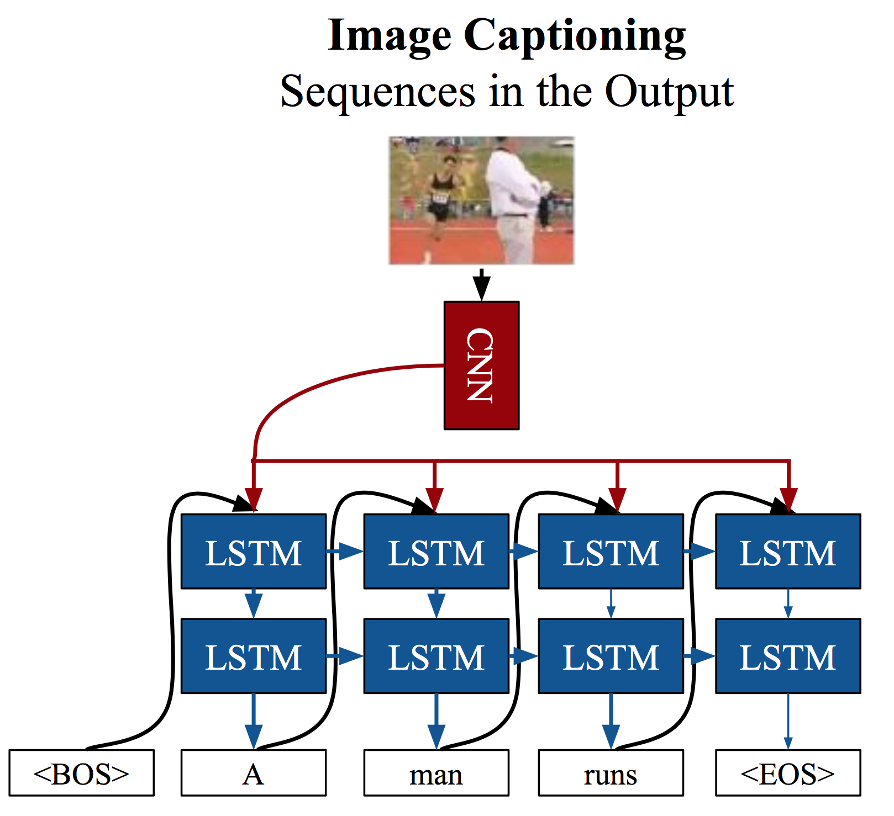
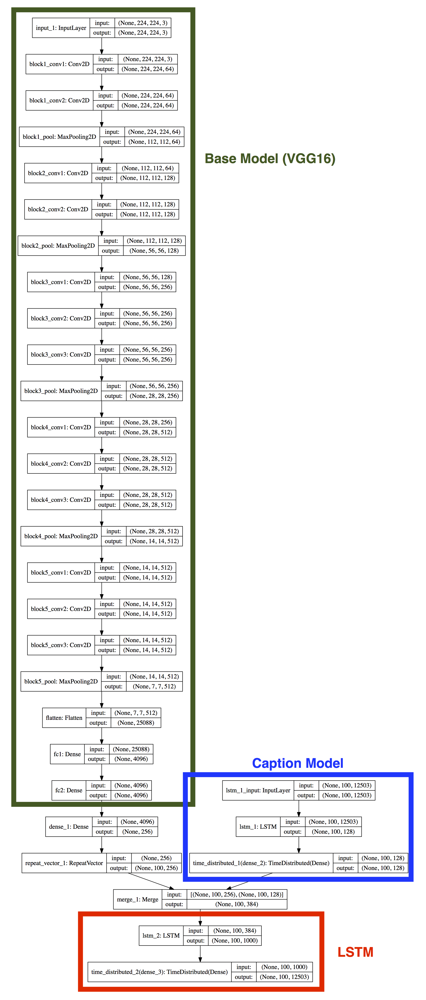

In this blog, we are going to use LSTMs (Long Short Term Memory Networks) to generate a caption for a given image. LSTMs are a special kind of Recurrent Neural Networks (RNN). If you are looking for some related papers, please refer to paper1 and paper2. The following figure shows the solution of image caption generation proposed in paper2. 
Next, we will implement a simpler one. The following figure shows the architecture of the implemented model.
 ___ ### 1. Dataset We use the [flickr30k](http://carina.cse.lehigh.edu/Data_Analytics_Course/resources/flickr30k_images.zip) dataset (4.39 GB) to train an image caption generator. The [flickr30k](http://carina.cse.lehigh.edu/Data_Analytics_Course/resources/flickr30k_images.zip) dataset consists of 31,783 images and each one has 5 corresponding captions. We split this dataset into a training subset (21,783 images) and a testing subset (10,000 images).2. A simple code
Please run the following command first:
> pip install pillow
Then, the following shows a simple demo code:
import os
import numpy as np
from keras.applications.vgg16 import VGG16, preprocess_input
from keras.models import Sequential, Model
from keras.layers import LSTM, Dense, Embedding, Merge, Flatten, RepeatVector, TimeDistributed, Concatenate
from keras.applications.vgg16 import VGG16, preprocess_input
from keras.preprocessing import image as Image
from keras.preprocessing import sequence as Sequence
from keras.callbacks import TensorBoard, ModelCheckpoint
from keras.utils import plot_model, to_categorical
from collections import Counter
CUDA_VISIBLE_DEVICES='0'
os.environ["CUDA_VISIBLE_DEVICES"] = CUDA_VISIBLE_DEVICES
# If you are running on your own computer, please change the following paths to your local paths.
# If you are running on HPC, you can keep the following paths.
# IMAGE_ROOT = '/Users/xincoder/Documents/Dataset/flickr30k_images/flickr30k_images'
# TRAIN_CAPTION_PATH = '/Users/xincoder/Documents/Dataset/flickr30k_images/train.txt'
# TEST_CAPTION_PATH = '/Users/xincoder/Documents/Dataset/flickr30k_images/test.txt'
IMAGE_ROOT = '/share/ceph/mcc7cse498/xil915/flickr30k_images/flickr30k_images'
TRAIN_CAPTION_PATH = '/share/ceph/mcc7cse498/xil915/flickr30k_images/train.txt'
TEST_CAPTION_PATH = '/share/ceph/mcc7cse498/xil915/flickr30k_images/test.txt'
WORDS_PATH = 'words.txt'
SENTENCE_MAX_LENGTH = 100 # In this dataset, the maximum length is 84.
EMBEDDING_SIZE = 256
IMAGE_SIZE = 224
CHECK_ROOT = 'checkpoint/'
if not os.path.exists(CHECK_ROOT):
os.makedirs(CHECK_ROOT)
class Data_generator(object):
def __init__(self, pra_batch_size=20, pra_word_frequency=2):
self.word_frequency = pra_word_frequency # remove words whose frequency less than this value
self.train_image_names, self.train_image_captions, self.test_image_names, self.test_image_captions = self.get_name_caption()
self.train_image_captions_index = self.caption2index(self.train_image_captions)
self.test_image_captions_index = self.caption2index(self.test_image_captions)
self.batch_size = pra_batch_size # how many samples we want to train in each step
self.train_steps_epoch = len(self.train_image_names)//pra_batch_size # steps per epoch
self.test_steps_epoch = len(self.test_image_names)//pra_batch_size # steps per epoch
def get_name_caption(self):
'''
Load training and testing data from files.
We add a <SOS> and <EOS> to the beginning and the end of each sentence respectively.
(<SOS> stands for "start of sentence", <EOS> stands for "end of sentence")
Returns:
train_image_name_list: all paths of training images
train_caption_list: corresponding training captions
test_image_name_list: all paths of testing images
test_caption_list: corresponding testing captions
'''
with open(TRAIN_CAPTION_PATH, 'r') as reader:
content = [x.strip().split('\t') for x in reader.readlines()]
train_image_name_list = [os.path.join(IMAGE_ROOT, x[0].split('#')[0]) for x in content]
train_caption_list = ['<SOS> {} <EOS>'.format(x[1].lower()) for x in content]
with open(TEST_CAPTION_PATH, 'r') as reader:
content = [x.strip().split('\t') for x in reader.readlines()]
test_image_name_list = [os.path.join(IMAGE_ROOT, x[0].split('#')[0]) for x in content]
test_caption_list = ['<SOS> {} <EOS>'.format(x[1].lower()) for x in content]
all_words = ' '.join(train_caption_list+test_caption_list).split(' ')
words_num = Counter(all_words)
words = [x for x in words_num if words_num[x]>=self.word_frequency]
print('{} unique words (all).'.format(len(words_num)))
print('{} unique words (count>={}).'.format(len(words), self.word_frequency))
with open(WORDS_PATH, 'w') as writer:
writer.write('\n'.join(words))
return train_image_name_list, train_caption_list, test_image_name_list, test_caption_list
def get_dictionary(self, pra_captions):
'''
Generate a dictionary for all words in our dataset.
Return:
words2index: word->index dictionary
index2words: index->word dictionary
'''
if not os.path.exists(WORDS_PATH):
words = set(' '.join(pra_captions).split(' '))
with open(WORDS_PATH, 'w') as writer:
writer.write('\n'.join(words))
else:
with open(WORDS_PATH, 'r') as reader:
words = [x.strip() for x in reader.readlines()]
self.voc_size = len(words)
words2index = dict((w, ind) for ind, w in enumerate(words, start=0))
index2words = dict((ind, w) for ind, w in enumerate(words, start=0))
return words2index, index2words
def caption2index(self, pra_captions):
words2index, index2words = self.get_dictionary(pra_captions)
captions = [x.split(' ') for x in pra_captions]
index_captions = [[words2index[w] for w in cap if w in words2index.keys()] for cap in captions]
return index_captions
def index2caption(self, pra_index):
words2index, index2words = self.get_dictionary('')
captions = [' '.join([index2words[w] for w in cap]) for cap in pra_index]
return captions
def convert2onehot(self, pra_caption):
captions = np.zeros((len(pra_caption), self.voc_size))
for ind, cap in enumerate(pra_caption, start=0):
captions[ind, cap] = 1
return np.array(captions)
def get_epoch_steps(self):
return self.train_steps_epoch, self.test_steps_epoch
def generate(self, pra_train=True):
'''
This is a generator which is used to continuously generate training or testing data.
pra_train = True : generate training data
pra_train = False : generate testing data
'''
while True:
if pra_train:
# we shuffle training data at the beginning of each epoch.
shuffle_index = np.random.permutation(len(self.train_image_names))
image_name_list = np.array(self.train_image_names)[shuffle_index]
image_caption_list = np.array(self.train_image_captions)[shuffle_index]
image_caption_index_list = np.array(self.train_image_captions_index)[shuffle_index]
else:
image_name_list = self.test_image_names
image_caption_list = self.test_image_captions
image_caption_index_list = self.test_image_captions_index
image_caption_index_list = Sequence.pad_sequences(image_caption_index_list, maxlen=SENTENCE_MAX_LENGTH, padding='post')
input_image_list = []
input_caption_list = []
target_caption_list = []
for index, (image_name, image_caption) in enumerate(zip(image_name_list, image_caption_index_list), start=1):
# image
input_image = Image.img_to_array(Image.load_img(image_name, target_size=(IMAGE_SIZE, IMAGE_SIZE, 3)))
input_caption_onehot = self.convert2onehot(image_caption)
target_caption_onehot = np.zeros_like(input_caption_onehot)
target_caption_onehot[:-1] = input_caption_onehot[1:]
input_image_list.append(input_image)
input_caption_list.append(input_caption_onehot)
target_caption_list.append(target_caption_onehot)
if len(input_image_list) == self.batch_size:
tmp_images = np.array(input_image_list)
tmp_captions = np.array(input_caption_list)
tmp_targets = np.array(target_caption_list)
input_image_list = []
input_caption_list = []
target_caption_list = []
yield [preprocess_input(tmp_images), tmp_captions], tmp_targets
class Image_Caption(object):
def __init__(self, pra_voc_size):
self.voc_size = pra_voc_size
# Model design start from here.
# we use the VGG16 as the base model to extract CNN feature from an image
base_model = VGG16(weights='imagenet', include_top=True)
base_model = Model(inputs=base_model.input, outputs=base_model.get_layer('fc2').output)
for layer in base_model.layers[1:]:
layer.trainable = False
# add a fully connected layer on the top of our base model
# and repeat it several times, so that it has the same shape as our language model
image_model = Sequential()
image_model.add(base_model)
image_model.add(Dense(EMBEDDING_SIZE, activation='relu'))
image_model.add(RepeatVector(SENTENCE_MAX_LENGTH))
# we use an Embedding layer to generate a good representation for captions.
language_model = Sequential()
# language_model.add(Embedding(self.voc_size, EMBEDDING_SIZE, input_length=SENTENCE_MAX_LENGTH))
language_model.add(LSTM(128, input_shape=(SENTENCE_MAX_LENGTH, self.voc_size), return_sequences=True))
language_model.add(TimeDistributed(Dense(128)))
# after merging CNN feature (image) and embedded vector (caption), we feed them into a LSTM model
# at its end, we use a fully connected layer with softmax activation to convert the output into probability
model = Sequential()
model.add(Merge([image_model, language_model], mode='concat'))
# model.add(Concatenate([image_model, language_model]))
model.add(LSTM(1000, return_sequences=True))
# model.add(Dense(self.voc_size, activation='softmax', name='final_output'))
model.add(TimeDistributed(Dense(self.voc_size, activation='softmax')))
# draw the model and save it to a file.
# plot_model(model, to_file='model.pdf', show_shapes=True)
self.model = model
self.model.compile(loss='categorical_crossentropy', optimizer='rmsprop', metrics=['accuracy'])
def train_model(self, pra_datagen):
# callback: draw curve on TensorBoard
tensorboard = TensorBoard(log_dir='log', histogram_freq=0, write_graph=True, write_images=True)
# callback: save the weight with the highest validation accuracy
filepath=os.path.join(CHECK_ROOT, 'weights-improvement-{val_acc:.4f}-{epoch:04d}.hdf5')
checkpoint = ModelCheckpoint(filepath, monitor='val_acc', verbose=2, save_best_only=True, mode='max')
# train model
self.model.fit_generator(
pra_datagen.generate(True),
steps_per_epoch=pra_datagen.get_epoch_steps()[0],
epochs=5,
validation_data=pra_datagen.generate(False),
validation_steps=pra_datagen.get_epoch_steps()[1],
callbacks=[tensorboard, checkpoint])
if __name__ == '__main__':
my_generator = Data_generator()
model = Image_Caption(my_generator.voc_size)
model.train_model(my_generator)
# for [img, cap], tar in my_generator.generate():
# print(img.shape, cap.shape, tar.shape)
# print(np.argmax(cap[0, 0]), np.argmax(tar[0, 0]))
# print(np.argmax(cap[0, 1]), np.argmax(tar[0, 0]))
# print('')
2. Assignment
- Run the above code to train the model and use it as a baseline.
- Modify the above code to improve the accuracy.
- Add a function to generate a sentence for a given image.
Hint: To improve the accuracy, you can try:
- different base models. (refer to: keras.applications)
- different RNNs. (refer to: keras.layers.recurrent)
- data augmentation by randomly rotating, fliping, or shifting training images.
3. Submite your sulotion:
- Your final python code. Please name it using your Lehigh ID. (<your_LehighID>.py)
- A short <your_LehighID>.pdf file. Simply describe what you did, what you got, and other things you want to report, e.g. what you have learned.
4. Train your model on HPC
It will take weeks (or months) if you only use the CPU on your laptops to train the model. Considering this, Prof. Chuah has already applied Lehigh University Research Computing (HPC) resource for all of you. (You may have already received an email from root@polaris.cc.lehigh.edu). Please run your code on your own computer first to make sure that there is no error before you run it on HPC.
You can access HPC via SSH.
- For Windows users: please download Putty.
- For Mac users: you can use SSH in a terminal.
The username and password for HPC is your LehighID and the corresponding password. For example, my LehighID id xil915, then I can access HPC using the following command:
ssh <your_LehighID>@sol.cc.lehigh.edu
All training and testing data have been saved in a shared directory:
/share/ceph/.../.../flickr30k_images
Once you login, you need to create two files in your own directories:
- your python code, namely image_caption.py.
- a bash file, namely run.sh
Save the following script into your run.sh:
#!/bin/tcsh
#SBATCH --partition=imlab-gpu
#SBATCH --time=100:00:00 # maximum time
#SBATCH --nodes=1 # 1 CPU can be be paired with only 1 GPU
#SBATCH --ntasks-per-node=1
#SBATCH --gres=gpu:1 # Need both GPUs, use --gres=gpu:2
#SBATCH --job-name xin_image_caption
#SBATCH --output="log.%j.%N.out"
module load python/cse498
python image_caption.py
Run your code:
sbatch run.sh
This command will sumbit your job to a waitinglist. Please use the following command to check the status of your jobs:
> squeue # list all jobs
> squeue -u xil915 # your LehighID, only list your job(s).
This is my output:
[xil915@sol CSE498]$ squeue -u xil915
JOBID PARTITION NAME USER ST TIME NODES NODELIST(REASON)
187364 imlab-gpu xin_imag xil915 PD 0:00 1 (Priority)
# ST == PD : this job is pending
# ST == R : this job is running
Cancel your job using:
> scancel 187364 # JOBID
When your job is running, all standard outputs will be saved in to file namely, log.*.out (e.g. log.187364.sol-b411.out). You can print it out using:
> cat log.187364.sol-b411.out
HELP !!!
Considering that the long waiting list on HPC, I provide a pre-trained model using my demo code to you.
During your model is training, you can use my pre-trained model to test your implemented function. (generating a sentence for a given image)
Downloads: pre-trained model, words index
- The pre-trained model only was trained for 2 epochs.
- The words index is a file which list the indices of words. ( A good result is not expected using this pre-trained model, considering that this is only trained for 2 epochs.)
Load weights:
model.load_weights(filepath)
Please note it in your report, if you use this pre-trained model to generate the final results.